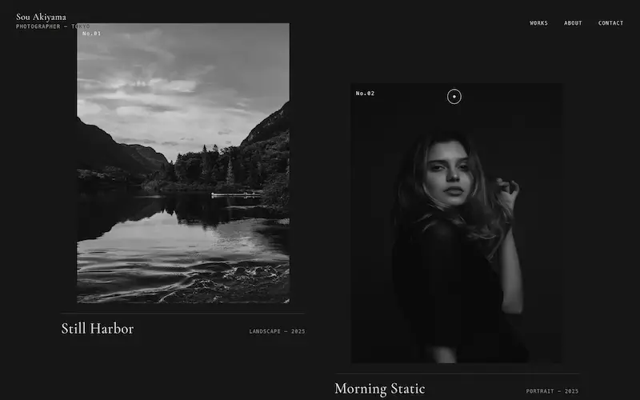
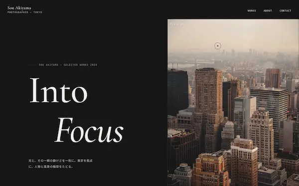
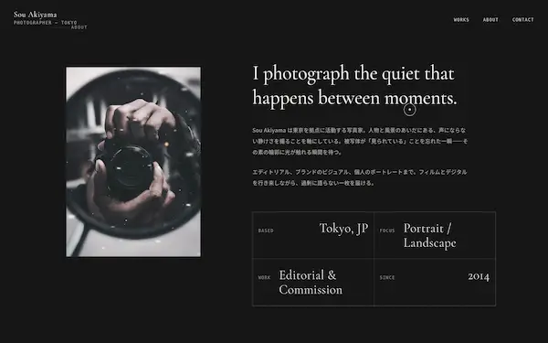

Case Study — Portfolio
Sou Akiyama写真家ポートフォリオ
東京を拠点にする写真家のポートフォリオ。「光と、その一瞬の静けさ」——作品そのものを主役にし、言葉を足しすぎない構成にしました。架空案件として制作したものです。
デモサイトを見るOverview
概要
| クライアント | 写真家「Sou Akiyama」 |
|---|---|
| 種別 | ポートフォリオサイト |
| 担当範囲 | 情報設計 / デザイン / フロントエンド実装 |
| 期間 | 約1ヶ月 |
| 使用技術 | HTML / CSS(SCSS) / JavaScript / WebGL |
Client & Target
クライアントとターゲット
クライアントは、東京を拠点に人物と風景を撮る写真家「Sou Akiyama」。「光と、その一瞬の静けさ」を軸に、作品そのもので語れる場をつくりたい——そんな想定からはじめました。
届けたいのは、価格や知名度よりも「作風が自分に合うか」で写真家を選ぶアートディレクターや編集者、そして個人。落ち着いた時間の中で作品の空気感を受け取り、「この人に撮ってほしい」と感じてもらうことを意識しました。
Problem & Objective
課題と目標
写真家のポートフォリオでは、サイトのデザインが主張しすぎると、肝心の作品が埋もれてしまいます。かといって素っ気ないだけでは、その人ならではの世界観や空気感が伝わりません。
そこで目標を二つに置きました。「作品を最優先で見せること」、そして「余白と佇まいで、写真家の静かな個性まで感じてもらうこと」。
Solution
解決アプローチ
画面の主役はあくまで写真。余白とタイポグラフィを抑えたトーンでまとめ、上品なセリフ書体と細かなフィルムグレインで「静けさ」の質感を添えました。過剰に語らず、作品の輪郭に光が触れる瞬間だけを残す構成にしています。
作品一覧ではWebGLによる控えめなホバー演出を効かせ、見る人の視線が自然と一枚ずつに向かうようにしました。

Design
デザインの工夫
「光と、その一瞬の静けさ」というコンセプトに合わせ、彩度を抑えた配色とセリフ系の見出し（Cormorant Garamond）で、流行に左右されない上品さを表現しました。本文は Noto Sans JP で可読性を確保し、余白をたっぷり取って、一枚一枚の写真が呼吸できるように。
華やかさよりも、静けさ。長く眺めていられる落ち着きを、いちばん大切にしています。


Development
実装のこだわり
作品一覧のWebGLホバーは、あくまで写真を引き立てる範囲に抑えて実装しました。読み込み時のプリローダーやスクロールに合わせた控えめなフェードで上質な「間」を持たせつつ、スマートフォンでも余白の心地よさが保たれるよう調整。動きに敏感な環境では演出を弱める配慮も入れています。
Result & Point
成果とポイント
目指したのは、作品を見たあとに「この人に撮ってほしい」と自然に思えるポートフォリオ。デザインは黒子に徹しつつ、写真家自身の静かな個性が第一印象で伝わる——その佇まいを意図して設計しました。
見どころは、余白の取り方と、写真を引き立てるWebGL演出の抑制。何も足さない潔さで上質さを表現した、架空案件として制作した一案件です。